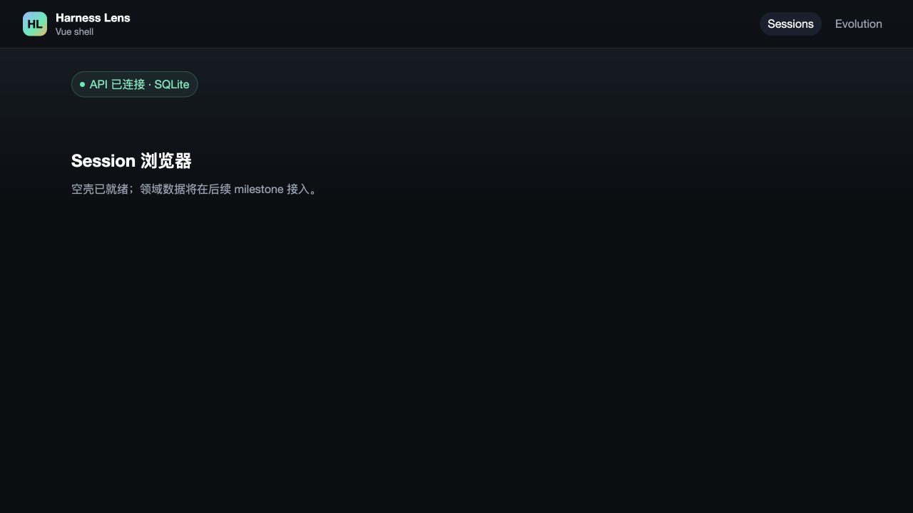
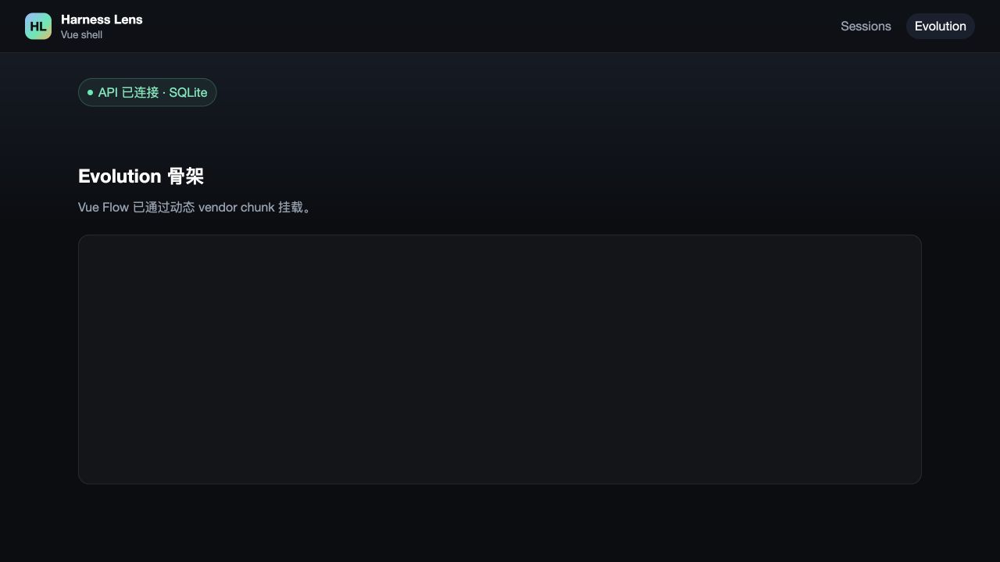

- Application
- Harness Lens Vue shell
- Issue
- #28 m1-05 web shell
- Pull request
- #72
- Commit
- 71594a1
- Runtime
- Vite dev server + FastAPI SQLite
Computer Use · Integration
m1-05 Vue Shell Smoke Report
Vue shell passed the real-browser smoke: the default sessions view connects to FastAPI, the evolution deep link lazy-loads Vue Flow, and the browser console reports no errors or warnings.
2/2GUI scenarios
0Console warnings/errors
3/3Automated integration
97.06%Frontend line coverage
Environment and Artifact
2026-10-25 · macOS Chrome-compatible IAB · commit 71594a1Scenario Matrix
3 pass| # | Scenario | Result | Detail | Evidence |
|---|---|---|---|---|
| 01 | Default sessions view | PASS | /sessions renders the empty-state page and the global health pill reports API connected with SQLite. | 01-home-connected.png |
| 02 | Evolution deep link and lazy Vue Flow | PASS | Direct navigation to /evolution mounts the skeleton and Vue Flow canvas through the dynamic vendor route. | 02-evolution-lazy.png |
| 03 | Browser console health | PASS | The smoke captured no browser errors or warnings during both routes. | browser-console.json |
Issues and Observations
No defects foundNo defects were found.
Evidence
2 screenshots

Automated Coverage Assessment
2 areas reviewed| Area | Coverage | Conclusion | Recommendation |
|---|---|---|---|
Conclusion
GUI smoke passedNo new GUI defect was found; the shell is ready subject to the remaining CI and review gates.
- Both required views render with the shared contract health state.
- Vue Flow remains on the lazy evolution route.
- Automated integration remains the authority for API failure envelopes.
Generated from Computer Use evidence; screenshots and console output are unedited runtime captures.